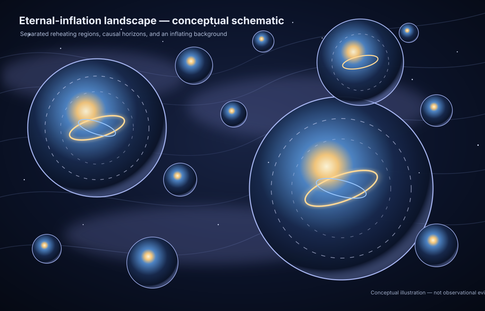

Inflation → reheating
Scalar-field acceleration followed by transfer of energy into radiation.
φ¨ + 3Hφ˙ + V,φ = 0MULTIVERSE COSMOLOGY LAB · v1.0
A reproducible numerical investigation of inflation, reheating, false-vacuum decay, cosmological bounces, quantum boundary conditions and observational tests.

THE RESEARCH QUESTION
The standard model describes an early hot, dense, expanding universe extremely well. It does not uniquely determine whether an inflationary phase, a bounce, a quantum boundary condition, or another mechanism preceded that thermal state.
COMPETING ORIGIN CLASSES
Scalar-field acceleration followed by transfer of energy into radiation.
φ¨ + 3Hφ˙ + V,φ = 0Metastable false vacuum decays through Euclidean bounce solutions.
Γ/𝒱 ~ A exp(−B/ℏ)High-density dynamics replace the classical boundary with a contracting predecessor.
H² ∝ ρ(1−ρ/ρc)A wave function and boundary prescription replace an ordinary classical initial condition.
Ĥ Ψ = 0
INTERACTIVE LAB
Compressed CMB benchmark: nₛ=0.9682±0.0032; r<0.034. CMB+DESI shifts the quoted nₛ mean to 0.9728±0.0029 in the cited 2026 synthesis.
WHAT THE CODE NOW DOES
| Calculation | Result | Interpretation |
|---|---|---|
| Quadratic, N=60 | nₛ≈0.96694, r≈0.13223 | Tensor prediction exceeds current bound. |
| Starobinsky-type, N=60 | nₛ≈0.96783, r≈0.002964 | Low tensor amplitude. |
| de-Sitter mode benchmark | relative error ≈5×10⁻¹¹ | Validates the mode integrator on an analytic case. |
| WDW toy, λ=0.2 | I=1.6667 | Reproduces the analytic WKB barrier integral. |
SCIENTIFIC LIMITS
Mathematical existence, dynamical probability and empirical support are different standards. Eternal inflation has a measure problem; CDL solutions depend on the potential; quantum-cosmology wave functions require boundary and interpretation choices; bounce models depend on high-density physics; compressed CMB constraints are not full likelihood analyses.